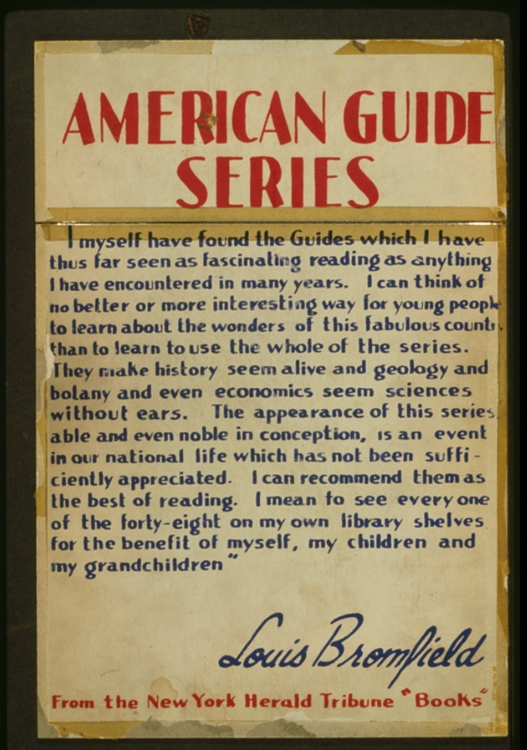

Though you may not be able to travel very far in space this summer, time and arm-chair travel have yet to be restricted. Why not engage in a bit of both with "The American Guide Series," a WPA project dedicated to profiling the 48 states. Links to access free digital reading editions and to purchase hardcover editions can be accessed at www.thebookgallery.net/americanguideseries.html